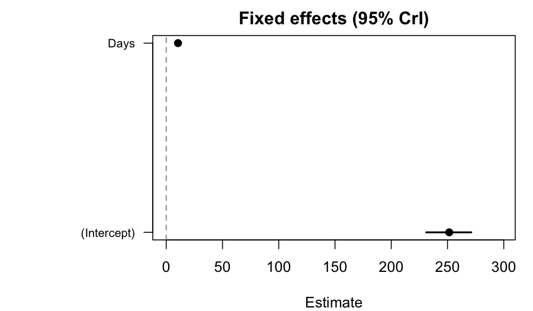

Tutorial 01: Getting started with flexyBayes
2026-06-09
Source:vignettes/flexyBayes-01-getting-started.Rmd
flexyBayes-01-getting-started.Rmd1. Why Bayesian mixed models?
Restricted maximum likelihood (REML) — the workhorse behind
lme4, nlme, and ASReml — returns a single
point estimate of each variance component plus a Wald-style standard
error. Two situations make this summary uncomfortable.
- Small group counts. When the number of clusters is modest (fewer than roughly thirty), the sampling distribution of the variance-component estimator has a long right tail. The Wald interval is informative only near the centre, where the posterior is approximately quadratic.
- Boundary problems. A maximum-likelihood variance estimate can land on zero. That is uninformative: the data may not have ruled out a small-but-nonzero variance, but the boundary collapses both the estimate and the uncertainty.
A Bayesian fit replaces the point estimate with the full posterior distribution. You see directly how much mass the data place near zero, and you can propagate that uncertainty into derived quantities — predictions, contrasts, best linear unbiased predictors (BLUPs) — without leaning on quadratic approximations.
flexyBayes is built around one principle: switching from
REML to Bayesian inference should not change the formula you write. If
you can express the model in ASReml-style syntax,
flexybayes() fits it. If you prefer brms-style notation,
fb() fits the same model (it auto-detects which grammar you
used). Both routes go through a shared internal representation, and the
same fitted object supports summary(),
predict(), emmeans::emmeans(),
marginaleffects::predictions(), and the
bayesplot::* family.
2. Installation
flexyBayes requires R 4.1.0 or later. Inference happens
through one of two engines.
- greta (default). A TensorFlow-backed Hamiltonian Monte Carlo (HMC) sampler. Covers every term type in the asreml-format domain- specific language (DSL).
- INLA — integrated nested Laplace approximation (Rue et al., 2009). A deterministic Laplace approximation over the latent Gaussian model (LGM) class. Substantially faster than HMC, but with a narrower scope.
Install both:
# greta and its TensorFlow backend
install.packages("greta")
greta::install_greta_deps() # one-time Python/TF setup
# INLA — not on CRAN; from the INLA team's repository
install.packages(
"INLA",
repos = c(getOption("repos"),
INLA = "https://inla.r-inla-download.org/R/stable")
)
# flexyBayes itself
install.packages("flexyBayes")
# or, while on GitHub:
# remotes::install_github("AAGI-AUS/flexyBayes")A handful of companion packages enrich the post-fit experience and are introduced in subsequent vignettes:
install.packages(c("emmeans", "marginaleffects", "bayesplot",
"posterior", "loo", "effectsize", "agridat"))If INLA cannot be installed on your platform, the package degrades
gracefully. The greta backend remains available; INLA-only paths emit
clear messages and you simply do without triangulate() for
now.
3. The four-verb API
flexyBayes exposes four user-facing entry points. Pick
the verb that matches how the model is expressed; the choice of entry
never implicitly changes the choice of backend.
| Verb | When to use |
|---|---|
flexybayes() / fb()
|
Principal / universal entry. Asreml-style
(fixed = ..., random = ~ g, rcov = ~ ...) or brms-style
(response ~ x + (1 \| g)) formulas; auto-detects the
grammar and takes a backend argument to choose the engine.
Full term-type surface (fa, us,
at, ar1, vm, ped,
spl, pol). |
fb_greta() / fb_inla() /
fb_brms()
|
Engine pins: fix the backend to greta (HMC), INLA (Laplace), or Stan
(brms). Each accepts the same two formula grammars;
fb_greta() also accepts a user-built native
greta_model. |
triangulate() |
Cross-engine posterior comparison. Takes two fits from different backends and reports per-parameter agreement metrics. |
The universal entries flexybayes() / fb()
take a backend argument: "auto" (the default —
gate-driven routing: INLA on accept, greta on refuse, with a silenceable
note carrying the reason), "greta" (HMC),
"inla" (explicit LGM fast path; refuses non-LGM models with
a structured message), and "brms" (Stan). The engine pins
fb_greta() / fb_inla() /
fb_brms() fix the backend instead of taking the argument.
The dispatch trace is available post-fit via
backend_decision(). The backend internals vignette
walks through the dispatch flow end-to-end.
4. Your first model
We use lme4::sleepstudy (Belenky et al., 2003): reaction
times for eighteen subjects across ten days of restricted sleep. The
natural mixed model has a fixed linear time trend and a random subject
intercept.
library(flexyBayes)
data(sleepstudy, package = "lme4")
str(sleepstudy)
#> 'data.frame': 180 obs. of 3 variables:
#> $ Reaction: num 250 259 251 321 357 ...
#> $ Days : num 0 1 2 3 4 5 6 7 8 9 ...
#> $ Subject : Factor w/ 18 levels "308","309","310",..: 1 1 1 1 1 1 1 1 1 1 ...We start with a brms-style formula – it reads exactly as in
lme4::lmer() or brms::brm():
Reaction ~ Days + (1 | Subject) – and fit it with the brms
(Stan) engine pin fb_brms(), which samples this small
hierarchical model to clean convergence:
fit_brms <- fb_brms(
Reaction ~ Days + (1 | Subject),
data = sleepstudy,
n_samples = 1000,
warmup = 1000,
chains = 4,
verbose = FALSE,
mcmc_verbose = FALSE
)
fit_brms
#> Bayesian mixed model [flexyBayes / brms passthrough]
#> -------------------------------------------------------
#> Fixed : Reaction ~ Days + (1 | Subject)
#> Family : gaussian ( identity link )
#> MCMC : 4 chain(s) x 1000 samples (warmup = 1000 ) -- 22.3 sec (Stan via brms)
#> Params : 25 monitored; 2 fixed, 1 random terms
#> Max Rhat: 1.003 [OK]
#> Min ESS: 525
#> -------------------------------------------------------
#> $glm -- GLM-compatible shim (coef, vcov, fitted, etc.)
#> $brms -- live brmsfit (loo, posterior_predict, summary)
#> $extras -- diagnostics, variance components, call infoThe printed summary includes a Representation: exact
line. This reports that the model was emitted to the backend without
structural approximation: every term in the formula is represented as
written, with no low-rank or sparse truncation. It describes the model
representation, not the inference. The greta and brms
(Stan) backends draw from the posterior by MCMC, so their only
inferential error is Monte Carlo sampling error, whereas the INLA
backend always performs approximate inference (integrated
nested Laplace approximation) whether or not its representation is
exact. flexyBayes treats “exact representation” and “exact inference” as
separate claims and makes only the first (see
API_STABILITY.md, section “Inference semantics”).
A note on random intercepts versus random slopes
The same data also supports
Reaction ~ Days + (Days | Subject) — a per-subject slope on
top of the intercept. The brms-style grammar accepts random intercepts
only (single or crossed); random slopes raise a structured refusal
naming the offending construct:
fb_greta(Reaction ~ Days + (Days | Subject), data = sleepstudy)
#> Error: random slopes (Days | Subject) are not in the supported
#> brms-style corpus. Express the random structure in asreml-style
#> form via flexybayes(fixed = Reaction ~ Days,
#> random = ~ Subject + Subject:Days, ...).The asreml-style entry flexybayes() covers a wider term
surface (factor-analytic, unstructured, autoregressive, pedigree,
smooths) and is documented in the asreml-shaped formulas
vignette; the hierarchical models vignette covers the
random-slope case via the asreml route. For the remainder of this
introduction we keep the random intercept.
5. What is inside a fit?
fit_brms is an object of class flexybayes.
The default print method is concise; summary() gives the
full posterior digest:
summary(fit_brms)
#> Bayesian mixed model summary [flexyBayes]
#> ============================================================
#> Fixed : Reaction ~ Days + (1 | Subject)
#> Family : gaussian / identity
#> N = 180 , chains = 4 , samples = 1000
#> Representation: exact
#> Engine: brms / Stan HMC
#>
#> -- Fixed effects (posterior) ---------------------------------
#> Estimate Post.SD 2.5% 97.5%
#> (Intercept) 251.5273 10.1695 231.0889 271.1541
#> Days 10.4903 0.8493 8.8704 12.1267
#>
#> -- Variance components --------------------------------------
#> Component Estimate SD 2.5% 97.5%
#> 1 sd_Subject 39.9453 7.8968 27.4310 57.9798
#> 2 sigma 31.2680 1.7057 28.0121 34.6908
#>
#> -- Convergence ---------------------------------------------
#> Rhat range: 1 - 1.003
#> ESS range: 525 - 4536
#> Run time : 22.3 secThe output is laid out in three blocks.
-
Fixed effects. Posterior mean, posterior standard
deviation (SD), and equal-tailed 95 % credible interval for each design-
matrix column. Here
(Intercept)is the baseline reaction time andDaysis the per-day slope. - Variance components. The Subject-level SD and the residual SD, both on the response scale.
- Sampler diagnostics. Effective sample size (ESS) and the rank-normalised (Vehtari et al., 2021). The targets for a trustworthy fit are ESS and on every parameter. The fixed effects and the residual SD reach them; the Subject-level variance component and its latent per-subject deviations mix more slowly – variance components are among the slowest-mixing quantities in hierarchical MCMC – so the worst of them does not reach the strict bar at a vignette-scale budget. How far above it lands varies from run to run, because greta’s TensorFlow-backed sampler is not fully seed-reproducible; in practice it sits in roughly the to range. The honest reading: the quantities you interpret are reliable, while the hardest-mixing nuisance parameter is not yet at the strict bar. Two moves address it – run longer (more warmup and draws), or cross-check against a different algorithm, which the next section does with INLA.
A coefficient plot of the fixed effects is one line:
plot(fit_brms, type = "effects")
Variance-component priors
When you call any entry (flexybayes() /
fb() or an engine pin) without specifying a prior,
flexyBayes announces the default it uses on every
random-effect SD and the residual SD: a bounded uniform on the
SD scale,
,
with a family-aware upper bound (Gelman, 2006). The announcement names
,
the scale basis, and the override knobs, and fires once per session.
Passing prior_vc_sd = m opts back into the legacy
default; passing a structured prior = fb_prior(...)
overrides both. The priors and regularisation vignette
articulates the choice in detail and shows how to set priors
deliberately.
Fixed-effect coefficients carry a separate weakly-informative
default:
,
applied uniformly to the intercept, contrast levels, continuous slopes,
factor-by-continuous interactions, and I()-expression
terms. The scale (sd = 100) covers responses with central
tendency up to several hundred on the natural scale without crushing the
posterior toward zero, while still regularising at small per-coefficient
sample sizes (Gelman et al., 2008). Override via
prior_fixed_sd = ... or, for individual coefficients, via
b("name") ~ normal(...) in fb_prior().
6. The same model on a second engine
fit_brms is a Markov chain Monte Carlo (MCMC) fit; INLA
runs a fundamentally different algorithm — a Laplace approximation over
a small set of hyperparameters — and finishes almost instantly:
fit_inla <- fb_inla(
Reaction ~ Days + (1 | Subject),
data = sleepstudy,
verbose = FALSE
)
summary(fit_inla)
#> Bayesian fit summary [flexybayes_inla / INLA backend]
#> ------------------------------------------------------------
#> Fixed effects:
#> mean sd 0.025quant 0.5quant 0.975quant mode kld
#> (Intercept) 251.4786 6.6716 238.3836 251.4783 264.5757 251.4783 0
#> Days 10.4509 1.2494 7.9982 10.4510 12.9033 10.4510 0
#>
#> Hyperparameters:
#> mean sd 0.025quant
#> Precision for the Gaussian observations 4.000000e-04 0.000000e+00 4.000000e-04
#> Precision for Subject 2.772571e+12 1.140429e+12 1.326318e+12
#> 0.5quant 0.975quant mode
#> Precision for the Gaussian observations 4.000000e-04 5.000000e-04 4.000000e-04
#> Precision for Subject 2.527563e+12 5.700903e+12 2.082286e+12
#>
#> Random effects:
#> groups: Subject
#> ------------------------------------------------------------Both engines have fitted the same posterior, one by Stan’s
Hamiltonian Monte Carlo and one by INLA’s Laplace approximation. How
well do they agree? That is the question triangulate()
answers. The canonical parameter-name registry reconciles each engine’s
internal names – brms’s b_Intercept, b_Days,
sd_Subject__Intercept, sigma, and INLA’s
(Intercept), Days,
Precision for Subject,
Precision for the Gaussian observations – automatically; no
name_map is needed for the common cases.
# INLA's posterior sampler can be flaky under restricted-process
# environments (e.g., CRAN's vignette re-render). Wrap so a failure
# is informative rather than fatal.
tri <- tryCatch(
triangulate(fit_brms, fit_inla),
error = function(e) {
message("triangulate() unavailable in this session: ",
conditionMessage(e))
NULL
}
)
if (!is.null(tri)) tri
#> <triangulate_result>
#> source_a: brms
#> source_b: inla
#> independence: algorithmic + implementation
#> (HMC (brms on Stan) versus Laplace approximation (INLA on C): different inference paradigms and different code bases.)
#> n_common: 4
#> only_a: 21 parameters (Intercept, r_Subject[308,Intercept], r_Subject[309,Intercept], r_Subject[310,Intercept], r_Subject[330,Intercept], ...)
#> only_b: 198 parameters (Predictor:1, Predictor:2, Predictor:3, Predictor:4, Predictor:5, ...)
#>
#> Metrics (per common parameter):
#> param mean_a mean_b mean_diff sd_a sd_b sd_ratio q025_diff
#> 1 (Intercept) 251.5273 251.2888 0.2385 10.1695 6.8851 1.477000e+00 -6.9009
#> 2 Days 10.4903 10.5096 -0.0192 0.8493 1.2666 6.705000e-01 0.8091
#> 3 sd_Subject 39.9453 0.0000 39.9453 7.8968 0.0000 4.682797e+07 27.4310
#> 4 sigma 31.2680 48.1621 -16.8941 1.7057 2.5135 6.786000e-01 -15.9653
#> q975_diff wasserstein_1
#> 1 7.1057 2.5152
#> 2 -0.9302 0.3095
#> 3 57.9798 39.8564
#> 4 -18.9459 16.8888The output is a per-parameter readout. The column to focus on first
is wasserstein_1 — a scale-respecting distance between the
two posterior marginals — read alongside the SD ratio and the
tail-quantile differences. Values near zero indicate agreement.
For the fixed effects the two engines agree closely – the intercept
and the Days slope match to within a credible-interval
width. The Subject variance component is where an approximate engine
earns scrutiny. INLA’s integrated nested Laplace approximation is fast
and accurate for the fixed-effect structure of a latent Gaussian model,
but its estimate of a small-group variance component – here
there are only eighteen subjects – is fragile: depending on the
numerical optimisation it may track the MCMC estimate or shrink the
component sharply toward zero. The sd_ratio column is where
any such divergence shows. That fragility is the lesson, not a detail to
hide: a single approximate fit of a small-group variance component is
not trustworthy on its own. Triangulate it against MCMC, or supply an
explicit penalised-complexity prior on the SD (the priors and
regularisation vignette shows how). The cross-engine
triangulation vignette catalogues this and the other common
disagreement patterns and the protocol for diagnosing each. A divergence
of more than 0.1 SD on a parameter you care about is a finding,
not a bug.
Letting the package choose the backend
backend = "auto" runs the model through
lgm_gate() and routes to INLA on accept, greta on
refuse:
fit_auto <- flexybayes(
Reaction ~ Days + (1 | Subject),
data = sleepstudy,
backend = "auto",
n_samples = 200,
warmup = 200,
chains = 1,
verbose = FALSE,
mcmc_verbose = FALSE
)
backend_decision(fit_auto)
#> $backend
#> [1] "inla"
#>
#> $path
#> [1] "auto_accept"
#>
#> $gate_checks
#> [1] "lgm_compatible" "gretaR_slot_dormant"
#>
#> $reason
#> [1] "lgm_gate() accepted; INLA dispatch."
#>
#> $preflight_summary
#> NULL
#>
#> $representation_plan
#> NULL
#>
#> $rejected_routes
#> $rejected_routes[[1]]
#> $rejected_routes[[1]]$backend
#> [1] "greta"
#>
#> $rejected_routes[[1]]$reason
#> [1] "not_chosen_by_policy"
#>
#>
#> $rejected_routes[[2]]
#> $rejected_routes[[2]]$backend
#> [1] "gretaR"
#>
#> $rejected_routes[[2]]$reason
#> [1] "backend_not_activated"
#>
#>
#>
#> $routing_policy_version
#> [1] "stage5a_v1"backend_decision() returns the dispatch trace: which
backend ran, which gate checks were evaluated, and the reason. On a
Gaussian random-intercept model the gate accepts and (when INLA is
installed) the auto path lands on INLA; otherwise it falls back to greta
with a silenceable note.
7. Where to next?
The remaining vignettes are organised by topic, not by engine. A suggested reading order:
| Vignette | What it covers |
|---|---|
| Foundational regression | one- and two-way fixed effects; smooths via mgcv::s();
comparison with lm()
|
| Hierarchical models | random intercepts, nested and crossed effects, Poisson and binomial generalised linear mixed models (GLMMs); backend dispatch in practice |
| asreml-shaped formulas | the full term-type catalogue: factor, fa,
us, at, ar1, vm,
ped, … |
| Priors and regularisation | the fb_prior() DSL, the uniform-on-SD default, the
fixed-effect default, prior-predictive checks |
| Cross-engine triangulation | the signature feature: when engines disagree, what it means, what to do |
| LGM feasibility | what lgm_gate() accepts, what it refuses, and how to
override |
| Downstream analysis |
emmeans, marginaleffects,
bayesplot, loo
|
| Backend internals | the IR, emit_greta, emit_inla, capability
gating, the gretaR slot |
| Structured covariance |
us, fa, at, design variance
components |
| Spatio-temporal | AR1, geostatistical, temporal correlation |
| Multi-environment trials and genomics | MET, genotype-by-environment interaction (GxE), GBLUP (genomic BLUP) |
8. Pitfalls
Never R CMD INSTALL while
flexyBayes is loaded. R’s lazy-load database can
be corrupted when a package is overwritten under a live session. Restart
R first.
Convergence is not correctness. A passing tells you that the chains explored the same posterior; it does not tell you whether that posterior is the right one for the problem. Posterior- predictive checks (Gelman, Meng, & Stern, 1996) and the cross-engine triangulation vignette address that distinction.
The uniform default is not always what you want. The
default scales the prior to the observed response. If you have strong
external information about a variance component (for example a known
measurement-error magnitude), set it explicitly via
fb_prior(). If you are reproducing a published analysis
that used a different prior, use that prior.
INLA’s scope is narrower than greta’s. Random
slopes, structured covariance models, finite mixtures, and a few
non-Gaussian families fall outside the LGM class.
flexyBayes detects these structurally via
lgm_gate() and either routes to greta or refuses with a
structured message that names the rule violated.
9. Active prompts
Try the following while the package is loaded:
- Re-fit
fit_gretaat a much shorterwarmup = 300and then a much longerwarmup = 12000. How do the ESS and ofsigma_Subjectrespond, and which parameters are most sensitive to the warmup budget? Does the posterior mean ofDaysshift at all? - Inspect
fit_greta$extras$code: this is the literal greta program thatflexyBayesgenerated. Compare it with the program generated by the asreml-style callflexybayes(fixed = Reaction ~ Days, random = ~ Subject, data = sleepstudy, ...). - Pass
prior_vc_sd = 1tofb_greta()and refit. The default-prior announcement disappears (you have opted into the legacy lognormal). Does the posterior onsigma_Subjectchange appreciably?
10. Session information
sessionInfo()
#> R version 4.5.2 (2025-10-31)
#> Platform: aarch64-apple-darwin20
#> Running under: macOS Tahoe 26.5.1
#>
#> Matrix products: default
#> BLAS: /System/Library/Frameworks/Accelerate.framework/Versions/A/Frameworks/vecLib.framework/Versions/A/libBLAS.dylib
#> LAPACK: /Library/Frameworks/R.framework/Versions/4.5-arm64/Resources/lib/libRlapack.dylib; LAPACK version 3.12.1
#>
#> locale:
#> [1] en_AU.UTF-8/en_AU.UTF-8/en_AU.UTF-8/C/en_AU.UTF-8/en_AU.UTF-8
#>
#> time zone: Australia/Adelaide
#> tzcode source: internal
#>
#> attached base packages:
#> [1] stats graphics grDevices utils datasets methods base
#>
#> other attached packages:
#> [1] flexyBayes_0.8.3
#>
#> loaded via a namespace (and not attached):
#> [1] mnormt_2.1.2 DBI_1.3.0 gridExtra_2.3
#> [4] inline_0.3.21 sandwich_3.1-1 rlang_1.2.0
#> [7] magrittr_2.0.5 multcomp_1.4-29 otel_0.2.0
#> [10] matrixStats_1.5.0 e1071_1.7-17 compiler_4.5.2
#> [13] loo_2.9.0 png_0.1-9 callr_3.7.6
#> [16] vctrs_0.7.3 reshape2_1.4.5 stringr_1.6.0
#> [19] pkgconfig_2.0.3 crayon_1.5.3 backports_1.5.1
#> [22] MatrixModels_0.5-4 bit_4.6.0 torch_0.17.0
#> [25] INLA_25.10.19 xfun_0.57 jsonlite_2.0.0
#> [28] progress_1.2.3 parallel_4.5.2 prettyunits_1.2.0
#> [31] tensorflow_2.20.0 R6_2.6.1 stringi_1.8.7
#> [34] RColorBrewer_1.1-3 StanHeaders_2.32.10 reticulate_1.45.0
#> [37] parallelly_1.47.0 numDeriv_2016.8-1.1 estimability_1.5.1
#> [40] Rcpp_1.1.1-1.1 rstan_2.32.7 knitr_1.51
#> [43] zoo_1.8-15 base64enc_0.1-6 bayesplot_1.15.0
#> [46] Matrix_1.7-4 splines_4.5.2 tidyselect_1.2.1
#> [49] dichromat_2.0-0.1 abind_1.4-8 codetools_0.2-20
#> [52] curl_7.0.0 processx_3.9.0 listenv_0.10.1
#> [55] pkgbuild_1.4.8 gretaR_0.5.0 lattice_0.22-7
#> [58] tibble_3.3.1 plyr_1.8.9 withr_3.0.2
#> [61] bridgesampling_1.2-1 S7_0.2.2 posterior_1.7.0
#> [64] coda_0.19-4.1 evaluate_1.0.5 marginaleffects_0.32.0
#> [67] future_1.70.0 survival_3.8-3 sf_1.1-0
#> [70] units_1.0-1 proxy_0.4-29 RcppParallel_5.1.11-2
#> [73] pillar_1.11.1 tensorA_0.36.2.1 whisker_0.4.1
#> [76] KernSmooth_2.23-26 checkmate_2.3.4 stats4_4.5.2
#> [79] sn_2.1.3 distributional_0.7.0 generics_0.1.4
#> [82] hms_1.1.4 ggplot2_4.0.3 rstantools_2.6.0
#> [85] scales_1.4.0 coro_1.1.0 globals_0.19.1
#> [88] xtable_1.8-8 class_7.3-23 glue_1.8.1
#> [91] emmeans_2.0.2 tools_4.5.2 data.table_1.18.2.1
#> [94] mvtnorm_1.3-6 grid_4.5.2 QuickJSR_1.9.0
#> [97] colorspace_2.1-2 nlme_3.1-168 cli_3.6.6
#> [100] tfruns_1.5.4 fmesher_0.7.0 Brobdingnag_1.2-9
#> [103] dplyr_1.2.1 V8_8.0.1 gtable_0.3.6
#> [106] greta_0.5.1 digest_0.6.39 classInt_0.4-11
#> [109] TH.data_1.1-5 brms_2.23.0 farver_2.1.2
#> [112] lifecycle_1.0.5 bit64_4.8.0 MASS_7.3-65References
Belenky, G., Wesensten, N. J., Thorne, D. R., Thomas, M. L., Sing, H. C., Redmond, D. P., Russo, M. B., & Balkin, T. J. (2003). Patterns of performance degradation and restoration during sleep restriction and subsequent recovery: A sleep dose-response study. Journal of Sleep Research, 12(1), 1–12.
Bates, D., Mächler, M., Bolker, B., & Walker, S. (2015). Fitting linear mixed-effects models using lme4. Journal of Statistical Software, 67(1), 1–48.
Gelman, A. (2006). Prior distributions for variance parameters in hierarchical models. Bayesian Analysis, 1(3), 515–534.
Gelman, A., Jakulin, A., Pittau, M. G., & Su, Y.-S. (2008). A weakly informative default prior distribution for logistic and other regression models. Annals of Applied Statistics, 2(4), 1360–1383.
Gelman, A., Meng, X.-L., & Stern, H. (1996). Posterior predictive assessment of model fitness via realized discrepancies. Statistica Sinica, 6(4), 733–760.
Rue, H., Martino, S., & Chopin, N. (2009). Approximate Bayesian inference for latent Gaussian models by using integrated nested Laplace approximations. Journal of the Royal Statistical Society: Series B, 71(2), 319–392.
Vehtari, A., Gelman, A., Simpson, D., Carpenter, B., & Bürkner, P.-C. (2021). Rank-normalization, folding, and localization: An improved for assessing convergence of MCMC. Bayesian Analysis, 16(2), 667–718.